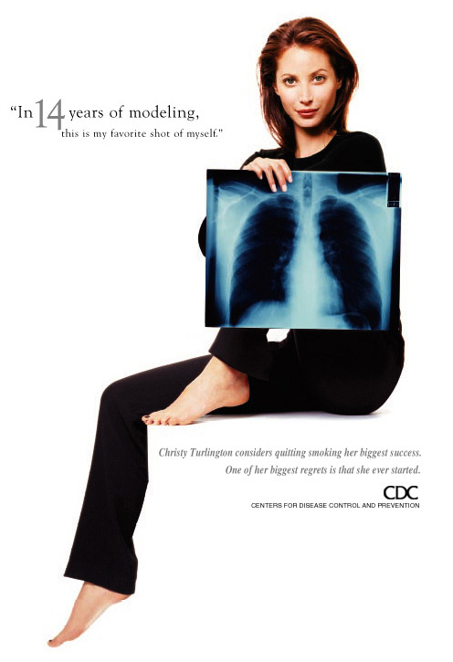

Although only 31 years old, model Christy Turlington was diagnosed with early-stage emphysema after undergoing a lung scan in New York. She smoked up to a pack of cigarettes a day between the ages of 13 and 26. According to Turlington, "The really frightening thing is, there was enough of an effect from my smoking that it caused permanent damage."
Christy, whose father died of lung cancer, also says, "Everyone knows the health consequences at this point. What people fail to acknowledge is their addiction---people think they can stop at any time, that it's easy---it's not. I know that kids are influenced by what they see in movies, videos, and TV because I've seen and heard testimonials stating such . . . . That (smoking makes) them look grown-up and that they won't become addicted. That they can quit before it's dangerous . . . . it is better to not even try it than to endure the ramifications of either quitting or dying."
Lung cancer kills over 150,000 people in the United States alone per year. Like Christy's father 85 percent of patients are diagnosed too late for surgery, and they generally survive only 6 to 15 months. Christy has managed after a long battle to quit smoking. According to Christy, her father quit also, but a few months before he died.
For more on Christy's work with anti-smoking campaigns see: